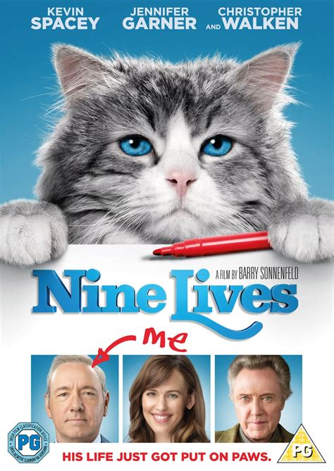
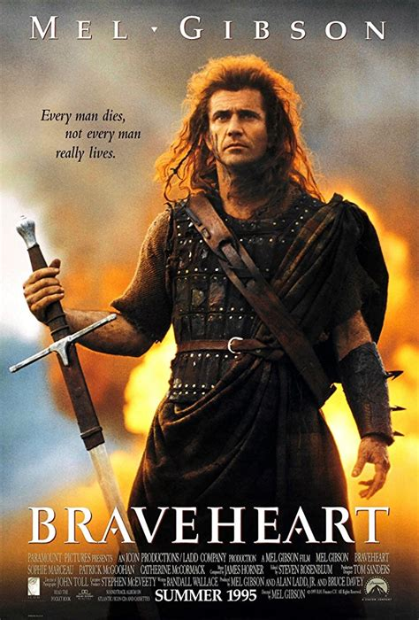

-
143min| Drama, Romance
Forres Gump
The history of the United States from the 1950s to the '70s unfolds from the perspective of an Alabama man with an IQ of 75, who yearns to be reunited with his childhood sweetheart. - 
Nine Lives (I) (2016)
A stuffy businessman finds himself trapped inside the body of his family's cat.
Directed by Barry Sonnenfeld | Stars: Kevin Spacey | Jennifer Garner |Robbie Amell - 
Braveheart (1995)
178 min | Biography, Drama
Scottish warrior William Wallace leads his countrymen in a rebellion to free his homeland from the tyranny of King Edward I of England.
Director: Mel Gibson | Stars: Mel Gibson, Sophie Marceau, Patrick McGoohan, Angus Macfadyen